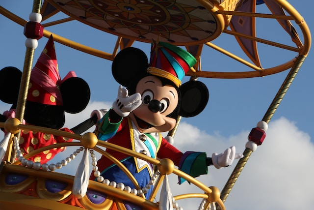
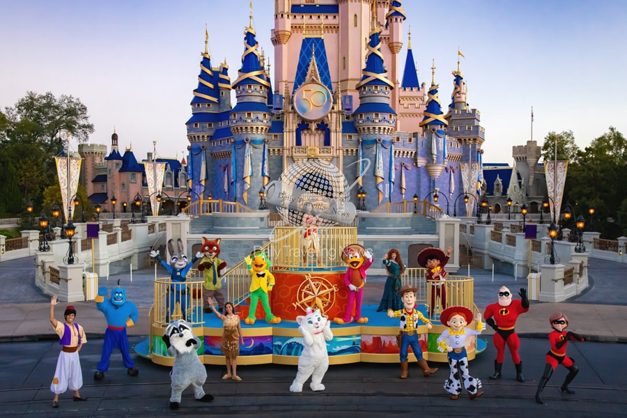

Magic Kingdom es el parque temático más emblemático y querido en Walt Disney World Resort en Orlando, Florida.Magic Kingdom es un lugar donde los visitantes de todas las edades pueden sumergirse en un mundo de fantasía, aventura y magia. Aquí tienes una descripción general de lo que puedes esperar al visitar Magic Kingdom:
- El Castillo de Cenicienta: El icónico Castillo de Cenicienta, situado en el centro del parque, es una de las estructuras más reconocibles en el mundo. Sirve como el punto focal y el símbolo de Magic Kingdom.
- Atracciones Clásicas: Magic Kingdom cuenta con numerosas atracciones clásicas que han deleitado a generaciones de visitantes. Entre ellas se incluyen Pirates of the Caribbean, Haunted Mansion, It's a Small World, Space Mountain y Splash.
- Personajes de Disney: En todo el parque, los visitantes pueden conocer y saludar a sus personajes de Disney favoritos, desde Mickey Mouse y Minnie Mouse hasta las princesas Disney y otros personajes queridos.
- Áreas Temáticas Únicas: Magic Kingdom se divide en seis tierras temáticas distintas: Main Street, U.S.A., Adventureland, Frontierland, Liberty Square, Fantasyland y Tomorrowland. Cada área ofrece su propio encanto y aventuras únicas.
- Fuegos Artificiales: El parque es famoso por su espectáculo de fuegos artificiales nocturno, "Happily Ever After", que proyecta imágenes en el Castillo de Cenicienta y combina música emocionante y efectos especiales.